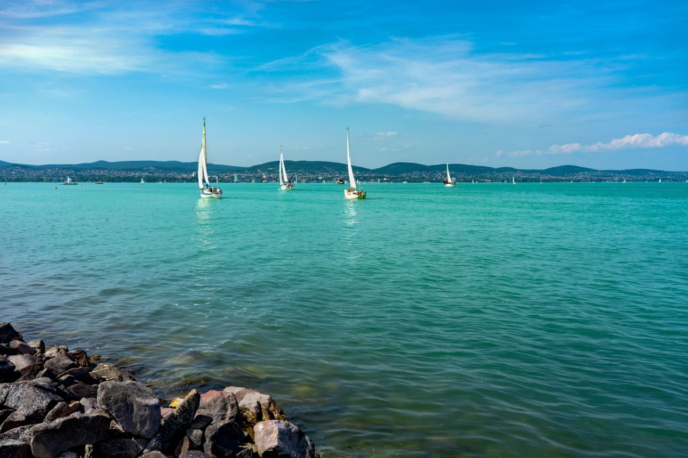
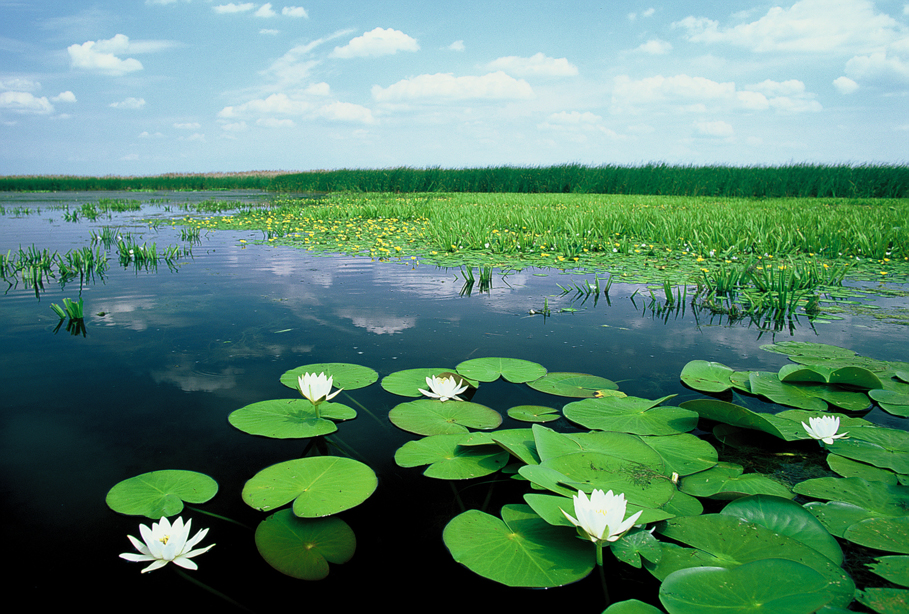
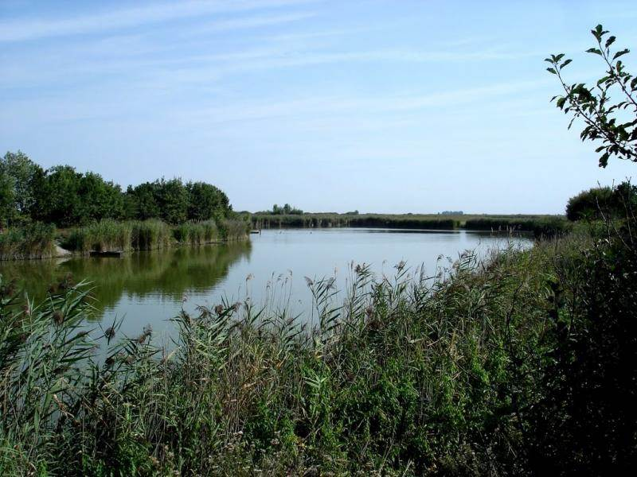

A Balaton Magyarország legnagyobb tava, egyben Közép-Európa legnagyobb édesvizű tava. Hatalmas mérete és kulturális jelentősége miatt sokan csak "magyar tengerként" emlegetik. A tó hossza körülbelül 77 kilométer, míg a legnagyobb szélessége eléri a 14 kilométert is. A Balaton különösen népszerű nyaralóhely, hiszen a déli part sekély vizének köszönhetően ideális a kisgyermekes családok számára is.  Az északi part más jellegű élményeket kínál: itt emelkednek a Badacsony vulkanikus hegyei, valamint híres borvidékek találhatók, amelyek kiváló minőségű nedűket kínálnak az idelátogatóknak. A tó körül számos híres város sorakozik, mint például Siófok, Balatonfüred, Keszthely és Tihany. Utóbbi különösen népszerű az apátságáról és levendulamezőiről. A Balaton nemcsak a fürdőzés szerelmeseinek kedvez, hanem ideális helyszín vitorlázáshoz, horgászathoz és kerékpározáshoz is. A vízminőség kiváló, rendszeres ellenőrzések biztosítják a fürdőzők biztonságát. A Balaton és környéke egész évben változatos programokat és kikapcsolódási lehetőségeket kínál minden korosztály számára.
A Tisza-tó Magyarország második legnagyobb tava, mesterséges eredetű, de természetes szépségei révén igazi természeti kincsnek számít. A 127 négyzetkilométeres vízfelület a Tisza folyó szabályozása révén jött létre, de mára önálló ökoszisztémával rendelkezik. A tó környéke gazdag élővilággal büszkélkedhet, különösen a madármegfigyelők és horgászok körében népszerű.  A Tisza-tó partvidéke kiváló lehetőséget kínál vízi sportokra, strandolásra és túrázásra egyaránt. Az itt található ártéri erdők, holtágak és nádasok rendkívül változatos élőhelyeket biztosítanak. A Tisza-tavi Ökocentrum Poroszlón látványos módon mutatja be a térség élővilágát és ökológiai értékeit. A tó körül kiépített kerékpárút lehetővé teszi a természet közvetlen felfedezését. A Tisza-tó különlegessége, hogy egyszerre kínál aktív kikapcsolódást és nyugalmat azoknak, akik távol akarnak lenni a tömegturizmustól. Az egyre népszerűbb vízi túrák során a látogatók csendes csatornákon, vadregényes vízi világban evezhetnek. A vízminőség folyamatosan ellenőrzött, a strandok tiszták és családbarátok.
A Szelidi-tó a Duna közelében, Bács-Kiskun vármegyében található, és egyike Magyarország természetes eredetű szikes tavainak. Bár mérete jóval kisebb, mint a Balatoné vagy a Tisza-tóé, különleges hangulata és tiszta vize miatt kedvelt nyaralóhely a régióban. A tó környezete védett természeti terület, értékes élővilággal és sajátos ökológiai adottságokkal.  A tó vizének enyhén sós jellege és magas ásványianyag-tartalma miatt gyógyhatásúnak tartják. A partján több kiépített strand is található, így ideális hely a nyugodt fürdőzésre és napozásra. A tó sekély vizének köszönhetően gyorsan felmelegszik, ezért már a tavaszi hónapoktól is alkalmas fürdésre. A környék kiváló lehetőséget kínál kerékpározásra, sétára és természetjárásra. A Szelidi-tó partján évente megrendezett nyári programok - például koncertek, sportversenyek és kézműves vásárok - egyre több látogatót vonzanak. A tó melletti üdülőövezet csendes, családias hangulatú, ami különösen vonzó azoknak, akik nyugalomra vágynak. Bár kevésbé ismert, mint a nagyobb tavaink, a Szelidi-tó valódi kincs azok számára, akik természetközeli kikapcsolódásra vágynak.